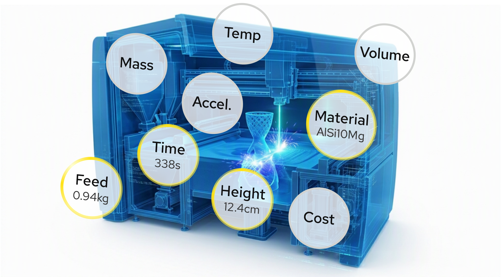
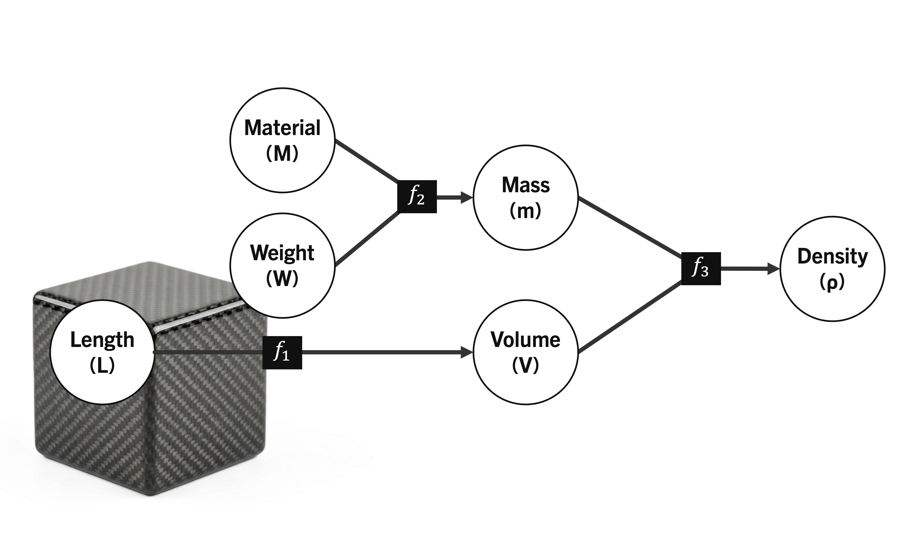
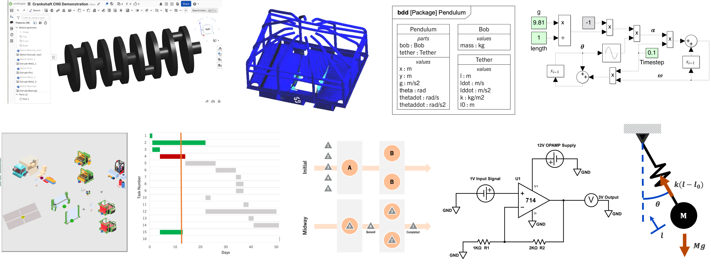
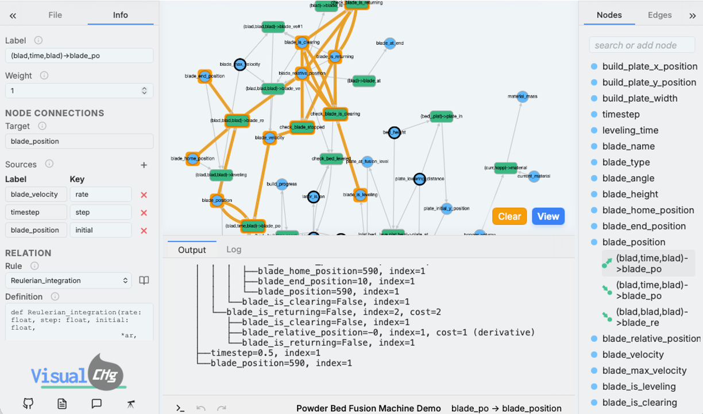
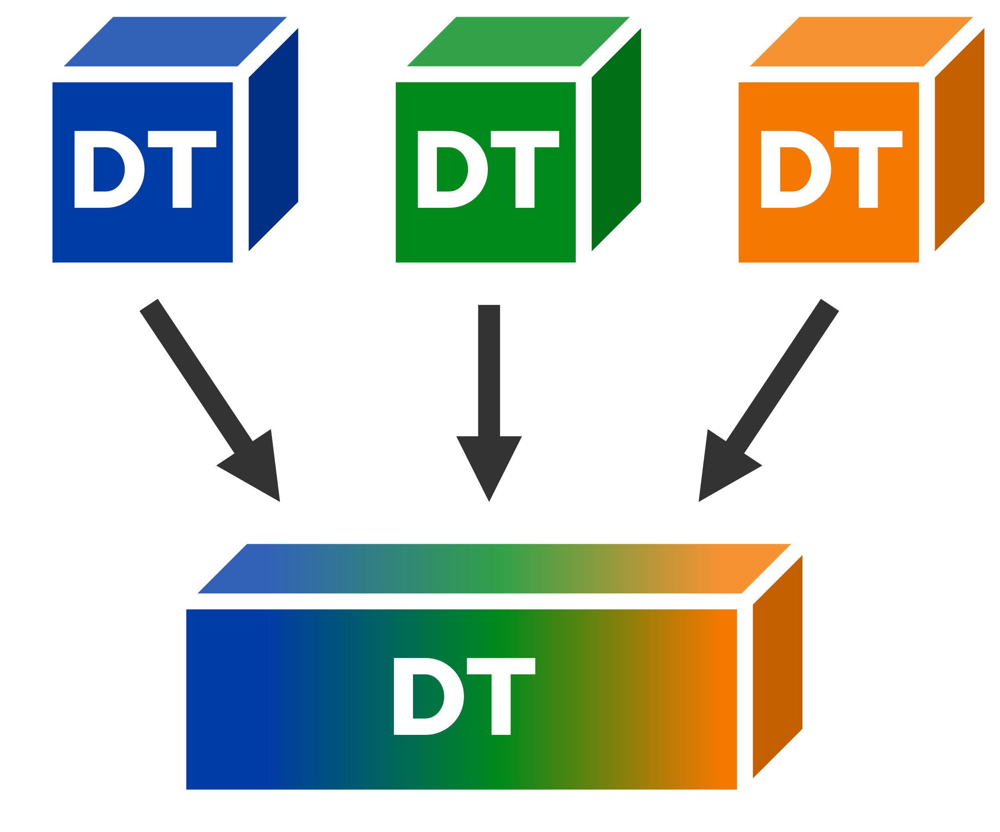

This is the official page for the Systems Engineering Applied Research (SEARCH) Lab. We're a group of researchers focused on understanding how simple things come together to make incredible systems.
Research Focuses

Digital Twins

Constraint Hypergraphs

Model-Based Enterprises
Digital twins are virtual recreations of real systems. An ideal twin represents all the information we know about some entity, such as a machine, organization, or process. By challenging how that information is represented, we can create intelligent, robust representations of the physical world.
Constraint hypergraphs are a mathematical construct that breaks a system into is base behaviors. They can be used to integrate knowledge holistically for a system--because everything, at is most primitive, can be represented as a system behavior. The SEARCH Lab pioneers the use of constraint hypergraphs for system modeling.
Organizations live or die on how they handle information. Models are ways of capturing the relationships between data, and model-based enterprises are those organizations that understand the interconnections between their employees, their products, their processes, and everything in between. We provide actual tools for capturing these relationships in flexible ways that preserve meaning--and also enables more accurate and predictable AI.

Digital Engineering

System Aggregation

Simulation Networks
Engineering is configuring the systems around us to behave a certain way. But the work of understanding that behavior can be just as difficult as actually building a machine. The SEARCH Lab explores how constraints, dynamic behavior, requirements, and realized products can be intertwined into useable tools for engineers.
Putting things together is the soul of systems engineering. But how can we model the emergent behaviors that occur when systems form? If you have models of a bird, the wind, and the local terrain, can you be certain that the combination of these models will predict where the bird will fly to? Using constraint hypergraphs and ontological reasoners, the SEARCH Lab has discovered new ways to combine systems to identify how those systems will interact. There are applications to everything, from digital threads to acquisition to complex system design.
If Alice knows that it's raining, and Bob knows that the office window is open, together they know that they need to shut the window. But just knowing these facts doesn't lead to action. A simulation network is all the different things that can be inferred from a set of observations. By using constraint hypergraphs to model system facts and relations, the SEARCH Lab can create minimalistic networks that capture all possible simulations--or inferences. This breaks down silos, allowing Alice, Bob, AI, and the entire organization to bring together their combined intelligence into a single source of truth.